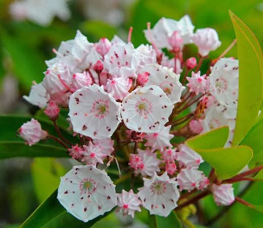

Mountain Laurel
Scientific Name: Kalmia latifolia

Mountain Laurel is a popular evergreen shrub found in the eastern United States. It produces beautiful white or pink flowers in the spring.Its range extends from the Maritime Provinces to the Great Lakes region and from the Atlantic to the Gulf of Mexico. It typicaly grows to a height of 5-15 feet, but can reach up to 20 feet in ideal conditions. The mountan laurl provides nectar for butterflies and other pollinators.
Planting and Care
Mountain Laurel prefers well-drained, acidic soil and partial shade. It is important to water the plant regularly, especially during dry periods. Pruning should be done after flowering to maintain its shape and encourage new growth.